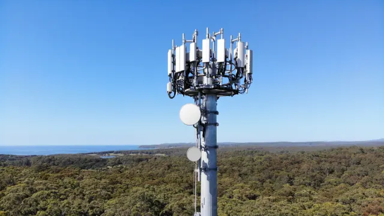

-Wed, 29 June, 2022
Within the next 30 years, world’s population is projected to grow from 7 to 10 billion people. The growing population will be accompanied by an 80 percent increase in energy usage, along with rising global temperatures and an increased incidence of natural disasters. To meet the sustainability milestones necessary to combat the global climate crisis, companies will need to optimize and digitize operations to reduce their environmental impact.
Recently, Qualcomm Technologies, which specializes in 5G-enabled platform production, published a report outlining the potential for 5G technology to achieve the critical sustainability standards needed to fight the climate crisis.
The report, titled “ Environmental sustainability and a greener economy: The transformative role of 5G,” outlines how 5G can positively impact industries to help them meet their future energy needs and reduce their environmental impact. Beyond sustainability, the report outlines the many economic benefits offered by 5G adoption, including increased revenue and productivity. According to the report, 5G will help companies gain competitive advantages while decreasing greenhouse gas emissions, energy consumption and water and pesticide usage. 5G-enabled “smart” technologies will help companies realize new economic opportunities and establish sustainable practices.
“Environmental sustainability is absolutely imperative, and we are working actively with our partners across many industries to leverage 5G to reduce carbon footprints and conserve resources,” said Cristiano Amon, the president and chief executive officer of Qualcomm Incorporated. “Governments and industry can do much more to unleash the sustainability benefits of 5G by accelerating the deployment of 5G networks and use cases, investing in 5G technology and ensuring a robust global semiconductor ecosystem. As a 5G technology leader, Qualcomm aims to play an even larger role in the digital and green transformation of industries to provide 5G-enabled sustainability benefits to societies and economies around the world.”
When it comes to 5G, real-time data collection and process optimization will allow companies to monitor and reduce important metrics like water usage and greenhouse gas emissions. 5G networks are up to 20 times faster than current broadband networks. This next generation wireless network is incredibly reliable and can help companies use natural resources more efficiently and reduce their overall emissions and waste production. For example, the Qualcomm report examined multiple usage cases to determine how 5G could specifically lower the production of greenhouse gases. The report determined that by adopting 5G-enabled smart technology in living, transport, manufacturing, building, agriculture and energy applications, 5G networks in the United States will reduce 374 million metric tons of greenhouse gas emissions in 2025. This is equivalent to a reduction of approximately 6 percent in annual emissions or equal to taking 81 million passenger vehicles off U.S. roads for one year.
The First Industrial Revolution, taking place between the 1760s and the 1840s, made the transition to industrialized manufacturing with steam power and the cotton gin. The Second Industrial Revolution, which lasted from the late 19 th century to the early 20 th century, introduced electrical power and telephones. The application of electricity to manufacturing processes gave rise to industrial control systems. Combinations of control components—electrical, mechanical, hydraulic or pneumatic—act together in an industrial control system to achieve an objective, such as the production, transportation or generation of material or energy.
When it comes to 5G, real-time data collection and process optimization will allow companies to monitor and reduce important metrics like water usage and greenhouse gas emissions. 5G networks are up to 20 times faster than current broadband networks. This next generation wireless network is incredibly reliable and can help companies use natural resources more efficiently and reduce their overall emissions and waste production. For example, the Qualcomm report examined multiple usage cases to determine how 5G could specifically lower the production of greenhouse gases. The report determined that by adopting 5G-enabled smart technology in living, transport, manufacturing, building, agriculture and energy applications, 5G networks in the United States will reduce 374 million metric tons of greenhouse gas emissions in 2025. This is equivalent to a reduction of approximately 6 percent in annual emissions or equal to taking 81 million passenger vehicles off U.S. roads for one year.
5G-enabled intelligent water systems will improve water usage in individual households and industries that heavily rely on water, including agriculture. 5G will allow utility networks to take advantage of multiple sensors, usage meters and leak detectors to optimize water usage for consumers and industries alike. Ultralow latency 5G networks use less energy—even in remote areas—to allow for real-time water usage monitoring. In addition to benefits on water consumption, real-time monitoring will generate more accurate household water bills to reduce consumer costs. Smart water usage in the U.S. alone will lead to a decrease in consumption of 320 million gallons of water and a reduction of 90 million gallons of water lost to leaks. This is equivalent to saving the amount of water that families would use in over 4 million homes.
The benefits don’t just apply to utilities. Pesticide and herbicide use continues to impact the health of ecosystems and communities living near agricultural sites. 5G-enabled unmanned aerial vehicles, such as drones, will collect real-time data of agricultural areas to improve the efficiency and accuracy of pesticide use. Drone delivery of pesticides will help protect farmworkers from exposure to toxic chemicals and reduce the overall amount of material required to spray a given field. The Qualcomm report highlights that such 5G-enabled technology can lead to a 50 percent reduction in pesticide use.
All these advances in 5G technology will also lead to an investment in green jobs, specifically for data scientists, data engineers and software engineers, with as many as 300,000 new jobs created by 2030.
5G networks are designed for efficiency and result in significant energy savings for telecommunications companies and beyond. For example, the 5G network architecture relies on centralized functions that can be located at sites with easier access to renewable energy sources like solar and wind power. With direct device-to-device communication, companies can save power by offloading signaling from base stations directly to devices within the network. Energy can also be saved through passive and active infrastructure sharing along 5G networks. Plus, energy efficiency can be gained with increased network cell capacity through beamforming, which reduces interference and improves transmissions.
Qualcomm ended its report with a call to action and specific policy recommendations to facilitate the deployment of 5G technology. Existing network connections do not operate at the speed necessary to handle the amount of data to facilitate the sustainable applications of the 5G technology outlined above. Qualcomm identified the American Jobs Plan and STEM education as two critical areas of investment to support the widespread adoption of 5G networks and help ensure that skilled workers are available to implement the necessary network upgrades and maintenance.
Beyond government investment, industries are already beginning to see the economic and environmental impacts of 5G adoption. With the potential to transform any industry, 5G networks will continue to drive innovation over the next decade, and enterprises and institutions can leverage their data for economic and environmental benefits.